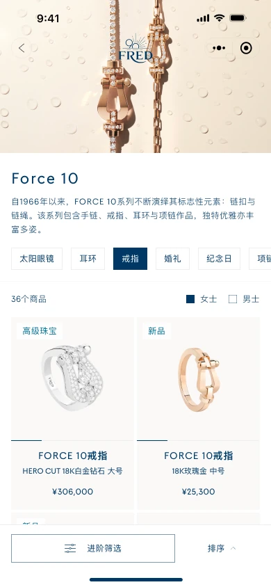
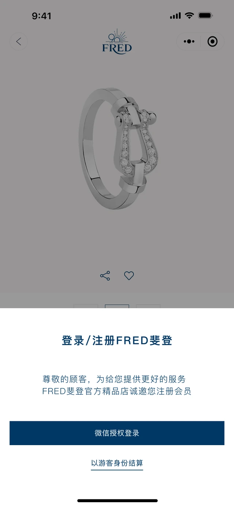
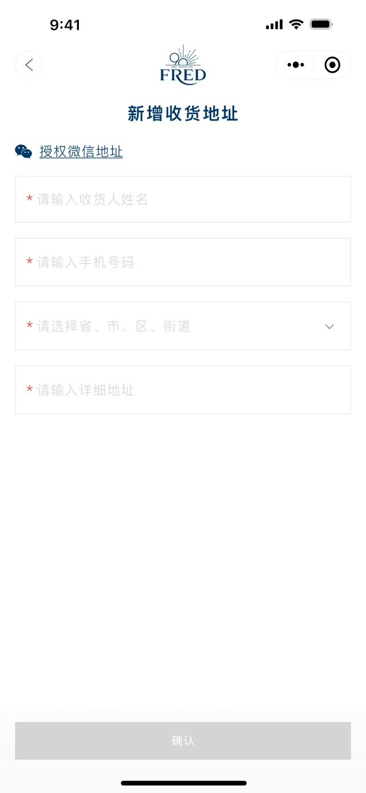
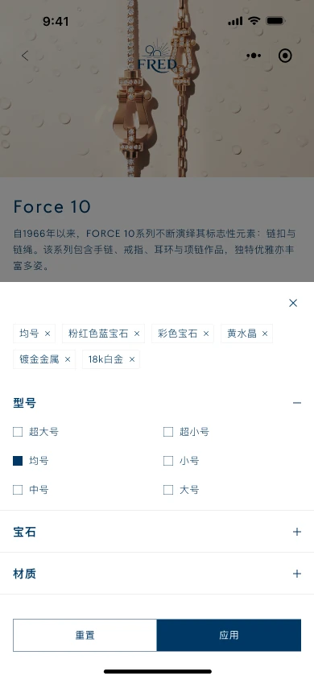

FRED · WeChat Mini Program
FRED · Designing Guest Checkout
I designed a way for shoppers to place an order in the FRED WeChat Mini Program without creating a membership account and to find that order again after paying.
Purchase and lookup designs delivered on time and accepted by the client.
- Project
- IT Consultis client project
- My role
- Guest checkout UX and UI design
- Deliverables
- Purchase flow and key screen designs



Interactive reconstruction
Can a guest buy this ring without an account?
Start from the product page
The shopper has chosen a Force 10 ring. Buying it opens an identity choice over the product page.

Choose a checkout route
Guest checkout sits directly below sign-in. The chosen ring stays visible while the shopper decides how to proceed.
Verify the checkout phone number
The same number connects this purchase to guest order lookup on a later visit. This demo uses a fictional number.
Review the order and add an address
The chosen ring and price carry through from the product page. The delivery section shows what the guest still needs to add.

Use a sample address
The design offers WeChat address import and manual entry. Here a fictional address lets you try the completed state.
Check before submitting
Review the ring, total and delivery address. Accept the terms to try the payment result.
Reuse saved delivery details
A signed-in shopper can review the address already on file. Accept the terms to try payment for the same sample purchase.

Member payment complete
The success screen links directly to this order.
Payment complete. How will you find the order?
Immediately after payment the transaction is in context. On a later visit the guest needs a way to identify the purchase.

Return through the guest profile
My orders gives the returning guest a recognisable starting point.
Identify the guest purchase
Use the sample number that represents the phone supplied at checkout. The demonstration uses local fictional data.
Run the lookup
The sample number is filled in. Run the lookup to see the guest order list.
Choose an order
The list exposes the product and status before the guest opens an order.
Reach order details
Both routes reach the same detail view. The guest can check the status or replay the other route.
Design decision
Account creation is optional. Recovering a purchase still needs a reliable identifier. I placed the identity choice at checkout and carried the guest’s phone number through to order lookup.
What I would check
I would walk through both the guest and member routes, check that the item persists and the address prompt appears when needed, then retrieve the order from the success screen and from a later visit.
Main screens
From brand discovery to product selection
Explore the wider mini program before the guest-checkout case study. The homepage and collections support discovery; product listings, filters and details support selection; the shopping bag brings selected items together.
Brand homepage
Brand imagery and collection entry points introduce the experience.

Collections
A dedicated navigation page brings the jewellery collections together.

Product listing
Product cards, categories and prices support browsing.


Product filters
Material and colour filters help narrow the selection.
Product details
Product imagery, specifications and pricing lead into purchase.

Shopping bag
Selected items, quantities and prices are reviewed together.
Compare the user journeys
Follow guests and signed-in shoppers as they place and retrieve an order. Their paths differ at checkout and order lookup, then use the same page structure for the remaining steps.
Place an order
Shared entry Product page or shopping bag
Guest
-
Checkout identity
Choose guest checkout
Select the guest option and verify a phone number.
-
Order review

Add shipping details
Add an address, review the items and total, then submit the order.
-
Payment feedback
Payment confirmed
Select View Order from the success screen.
-
Open the order

Review the order
Open the detail page to confirm order status and items.
Signed-in shopper
-
Checkout identity
Continue to checkout
Start from a product page or the bag using the current sign-in session.
-
Order review

Review order details
Check the existing shipping details, items and fees. Edit as needed before submitting.
-
Payment feedback
Payment confirmed
Use the same success screen to open the order.
-
Open the order
Review the order
Confirm the status and items on the order detail page.
Find an order
Shared entry Account → My Orders
Guest
-
Enter Orders
Open My Orders
The Orders entry remains available from the account page for guests.
-
Choose lookup method
Switch to Guest Orders
Enter the checkout phone number or authorize it through WeChat, then search.
-
Browse results

Review guest orders
Use the items and order status to identify the right purchase.
-
View details
Open order details
See the status, items and delivery information.
Signed-in shopper
-
Enter Orders

Start from the account page
Open My Orders to access orders linked to the account.
-
Choose lookup method
My OrdersGuest OrdersUse the current session
My Orders shows account purchases. Shoppers can also switch to Guest Orders to look up a previous guest purchase.
-
Browse results

Review account orders
Browse the order cards and select a purchase.
-
View details
Open order details
See the status, items and delivery information.
Guest checkout flow
How could shoppers buy and retrieve an order without an account while keeping the member sign-in option available?
Offer two checkout paths at the point of purchase
When a shopper starts a purchase from the product page, a bottom sheet offers WeChat sign-in as the primary action and a guest checkout link immediately below.
- Keep the product in view
- The sheet opens over the product page, so shoppers can still see what they are about to purchase when they choose a path.
- Separate phone verification from membership
- Guests skip membership registration. A dedicated phone verification sheet offers the option to authorize a phone number through WeChat.
Give guests a single place to review their purchase
Guests add their shipping address on the order review path. The address form supports importing a WeChat address or entering one manually.
- Show invoice fields when relevant
- The review page leads with shipping and the order items. Requesting an invoice reveals personal and company options, and the company option shows fields for the company name and tax ID.
- Make the total visible before submission
- The order summary lists the subtotal, discounts, shipping and amount due, with the terms presented before order submission.
Let guests find the order now or later
The payment success screen gives guests a prominent View Order button. On a later visit, shoppers can open the Guest Orders tab and look up their purchase using the phone number from checkout.
- Give guest orders their own tab
- Guest Orders sits beside My Orders. Guests can type their phone number or authorize it through WeChat.
Project delivery
I used comparable purchase flows to align the client on the pages and states needed for guest checkout and order lookup. The client accepted the designs after on-time delivery.